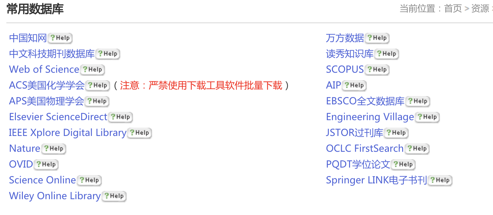

文献搜索网站
中文文献搜索
- 中国知网
- 万方数据
英文文献搜索
Google scholar
链接：https://scholar.google.com/
优点： 文献量大，全
缺点： 分类归纳不友好，通过简单的搜索关键字不能准确定位到想要的paper
复旦大学图书馆
其实对于大多数写毕业论文的学生来说，学校给出的这些数据库已经完全足够了。在外网好多论文是要收费的，学校已经买了好多数据库的版权，直接用学校网络或者通过vpn链接学校网络，下载完全免费，完全免费，完全免费啊同学们！这么好的资源不去下载简直对不起学费。
这里列出复旦大学给出的资源

如何搜索适合的文献
- 所在领域内的顶级国际会议和期刊杂志的文章，找影响因子高的
- 对文献进行排序，关键词相关度，相关时间，被引用次数
- 被引用次数多的文献里找引用这边文章前几名的文章（谷歌学术里会有被引用的次数，点击之后就是被引用的文章）
- 关注综述类文章（Survey）
- 积累英文关键词，搜索统一中文词对应的英文单词
期刊
在论文搜索中常遇到期刊的搜索项，什么是期刊呢？